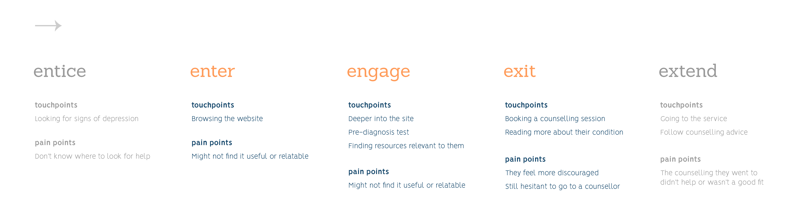
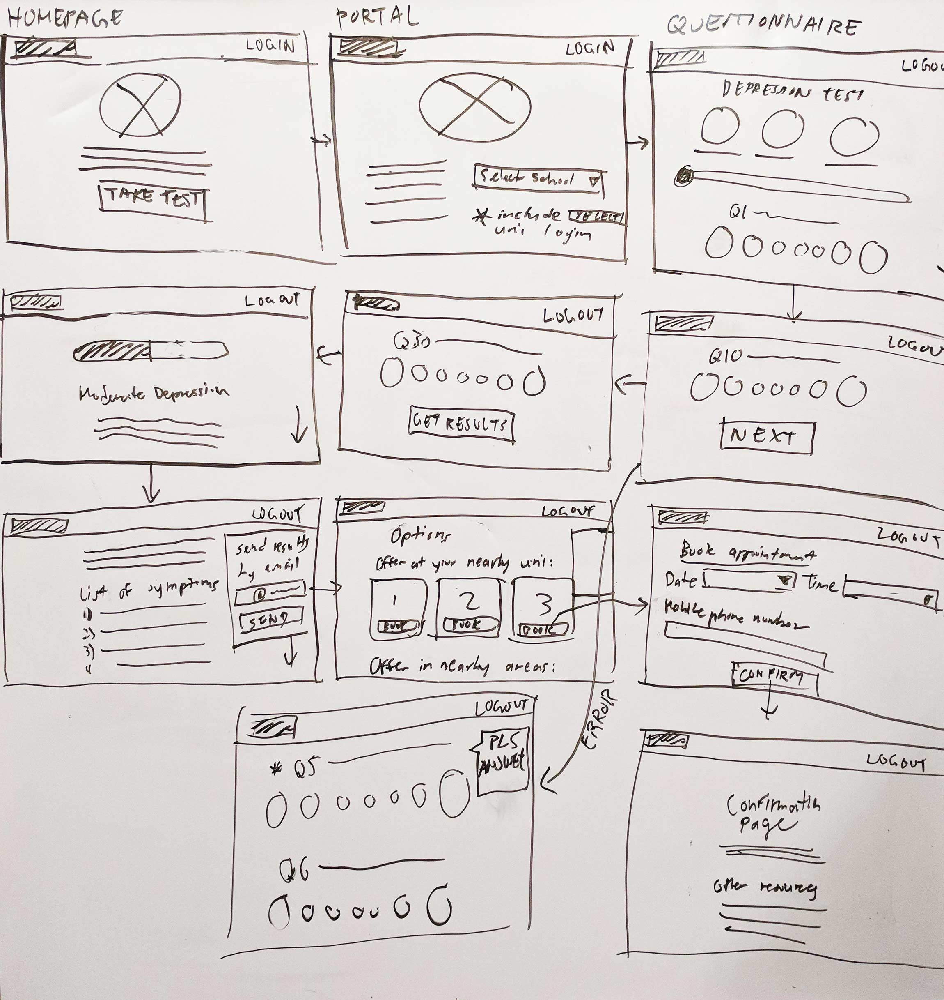
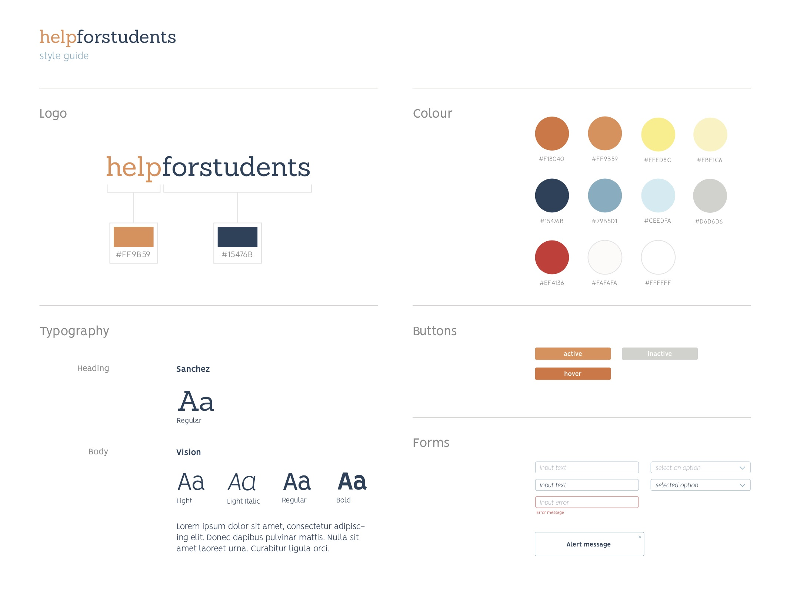
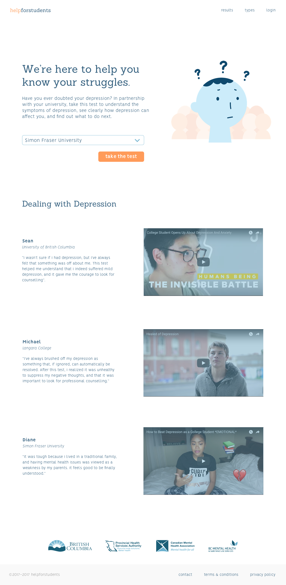
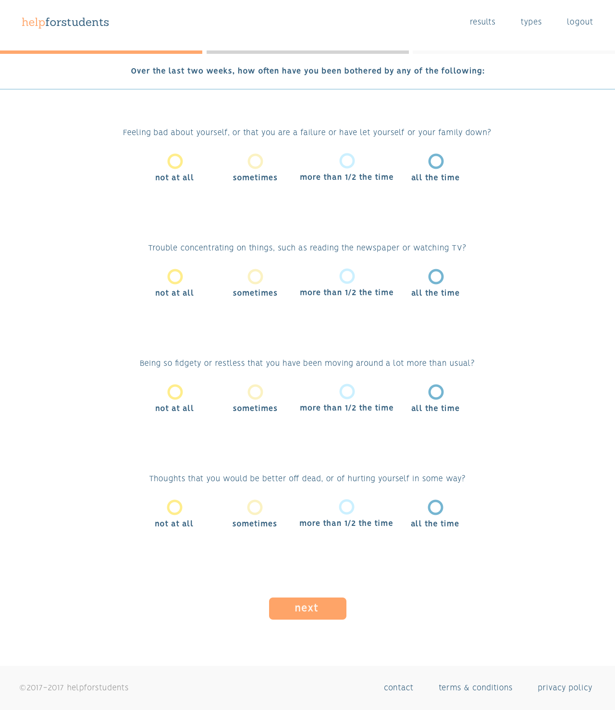
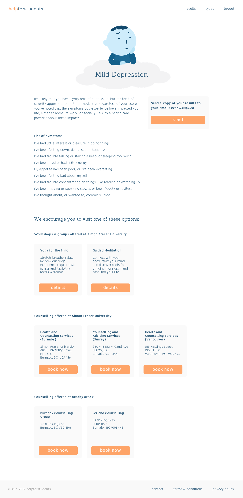
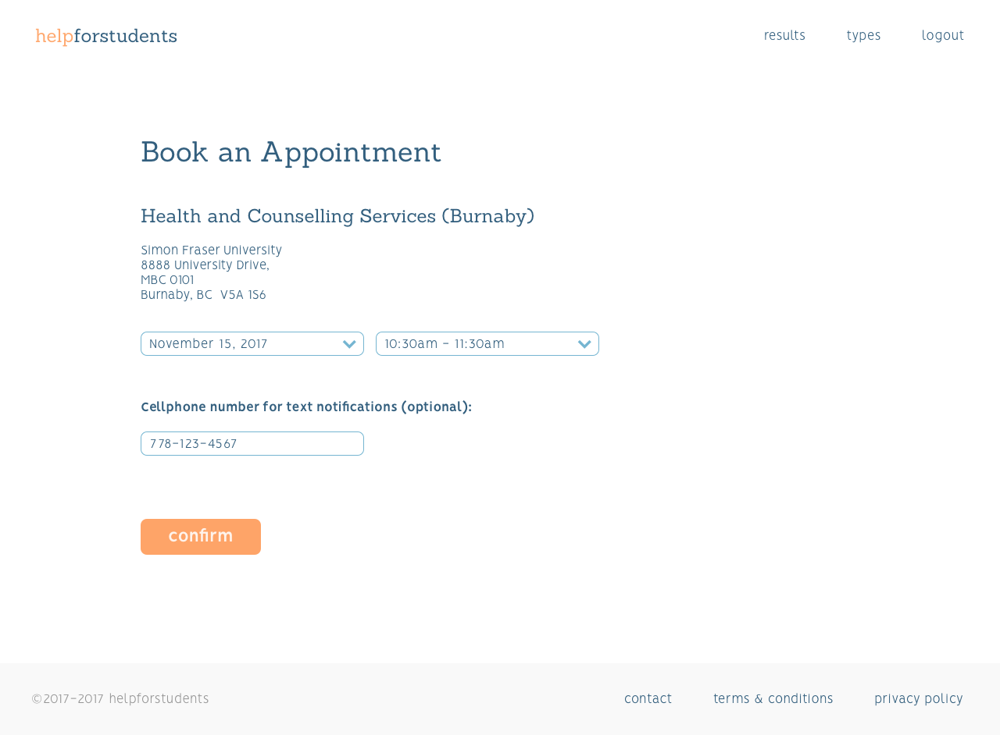

help for students
A web solution that provides a preliminary diagnosis questionnaire, helping those who are uncertain about their depression to seek for help and resources. This solution offers various resources to help seek for professional help.
- Roles: UI Design, Visual Design, Prototyping, Project Planning
- Tools: Sketch, InVision, Adobe Illustrator
- Year: 2017
- Context: Case Study (6 weeks)
- Team: Feon Yeung, Phoebe Lim
design process
preliminary research
After deciding as a group to work within the domain of mental health and depression, we decided to narrow down our target audience to a more specific group by means of online research and in-person interviews of people who have experience with depression and/or with counselling services. Through our preliminary research, we discovered a number of key insights:
- 1) The waiting period and sign up process of the initial counselling session could be daunting and stressful.
- 2) People have troubles identifying whether or not they have depression, and are too doubtful to approach counselling services for help.
- 3) Many existing mental health apps do not show evidence of improving mental health.
idea proposal + interaction framework
Using the insights from our preliminary research, we looked into existing solutions and case studies to determine which ideas would be the most feasible and useful for our target audience. After careful consideration of the scope of our project, we decided to go with a web solution to help university students understand if they are suffering from depression. This web solution provides a preliminary diagnosis questionnaire based on Here To Help BC’s depression screening test along with resources offered at nearby and university counselling services and events. We then developed the interaction framework highlighting the stages and pain points the user may experience.

initial prototype
As the visual and interface design lead on the team, I drew out the initial wireframes based on the interaction framework and discussed them with my team members to get everyone’s collective insights. Apart from the functionality and flow of the website, we also identified that the visual style of the website as an important aspect for students to feel welcomed; we spent an equal amount of time to talk about the colour palette, language, and fonts for the website. I then created a prototype using Sketch for the interface layout and InVision to make it interactive.


user testing + refining
To further refine our prototype, we conducted usability tests on four university students. We created a pre-test questionnaire that helped us understand the user’s current state and general thoughts on mental health and resources around campus; a series of tasks that covered the various functions of the website; and a post-test questionnaire to understand where our prototype could use improvements.
The most important insight we found was that it would be useful to have validation from students stating the test helped them reach out to the counselling services; for the mockup, we implemented what that might look like on the website.
interface + interactions
enter
Students will be able to browse the website and look at past experiences of students who have taken the test and reached out to counselling services; this would allow the user to trust in the preliminary diagnosis test.

engage
Students will take the test by first selecting their university and logging into their university’s login portal. After completing the questionnaire, the student will receive the results of the severity of their depression and show resources based on their current location and their offered university counselling services and events.


exit
In partnership with local universities, students are encouraged to attend an event or book an appointment directly through the website. This reduces the pain point of hesitating to engage with mental health services.

InVision interactive prototype
reflection
This project was a good opportunity for me to practice my visual and user interface design skills and to gain project ownership in those aspects. One part I would’ve wanted to improve is to gain professional insights from those in the field of mental health to have a more effective and accurate representation of a viable product. Regardless, I was able to learn and apply all of the skills I’ve learned over the years and effectively apply it to a project that I am proud of.
next project: a rocha volunteers →